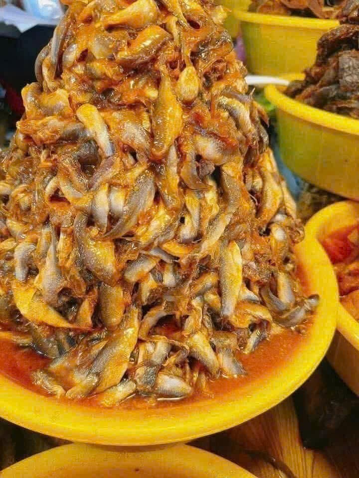
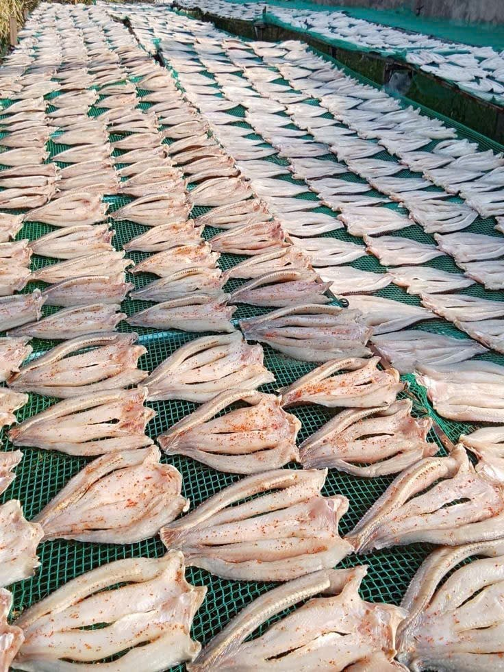

🌊 Đặc sản biển Ba Tri
Là huyện ven biển, Ba Tri có nhiều đặc sản từ biển được chế biến theo phương pháp truyền thống, mang đậm hương vị miền biển Nam Bộ. Những sản phẩm này không chỉ ngon mà còn lưu giữ được nét văn hóa ẩm thực đặc trưng của địa phương.
🐟 Mắm cá lóc, mắm cá sặc
Đặc sản truyền thống mang hương vị mặn mà đặc trưng miền biển. Mắm cá Ba Tri được làm từ cá tươi, ủ theo công thức gia truyền với thời gian lên men vừa đủ, tạo nên hương vị đậm đà, thơm ngon. Đây là gia vị không thể thiếu trong các bữa cơm của người dân Ba Tri.
🦐 Tôm khô Ba Tri
Tôm được phơi khô tự nhiên, thịt chắc và ngọt. Tôm khô Ba Tri nổi tiếng với chất lượng cao, được làm từ tôm tươi sống đánh bắt tại vùng biển Ba Tri. Sau khi phơi khô, tôm giữ được độ thơm ngọt tự nhiên, thịt chắc và có màu đỏ cam đẹp mắt. Có thể dùng để nấu canh, rim hoặc làm mắm tôm.

🐠 Cá khô một nắng
Cá tươi phơi đúng một nắng, giữ được độ mềm và vị đậm đà. Cá khô một nắng là đặc sản được chế biến theo phương pháp đặc biệt: cá tươi sống được phơi dưới nắng trong một ngày, vừa đủ để cá khô bên ngoài nhưng vẫn giữ được độ mềm mọng bên trong. Món ăn này có vị ngọt tự nhiên của cá biển, thường được nướng hoặc chiên giòn ăn kèm cơm.
💡 Đặc điểm chung của đặc sản biển Ba Tri
Các đặc sản biển Ba Tri đều có những điểm chung:
- Được chế biến từ nguyên liệu tươi sống đánh bắt tại chỗ
- Sử dụng phương pháp bảo quản truyền thống, không chất bảo quản
- Giữ được hương vị tự nhiên, đậm đà của biển
- Là món quà ý nghĩa khi du khách đến thăm Ba Tri